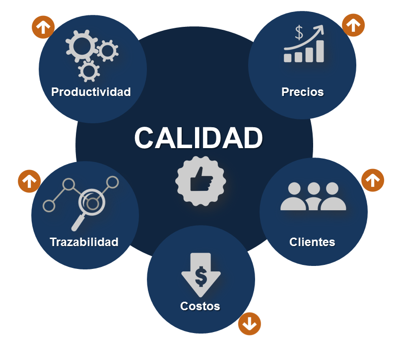
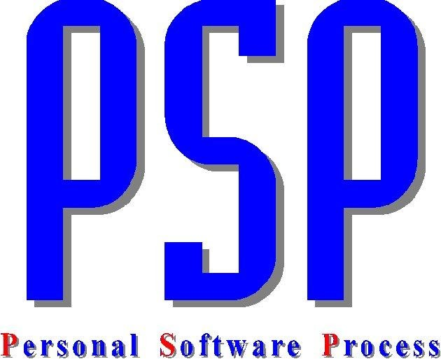
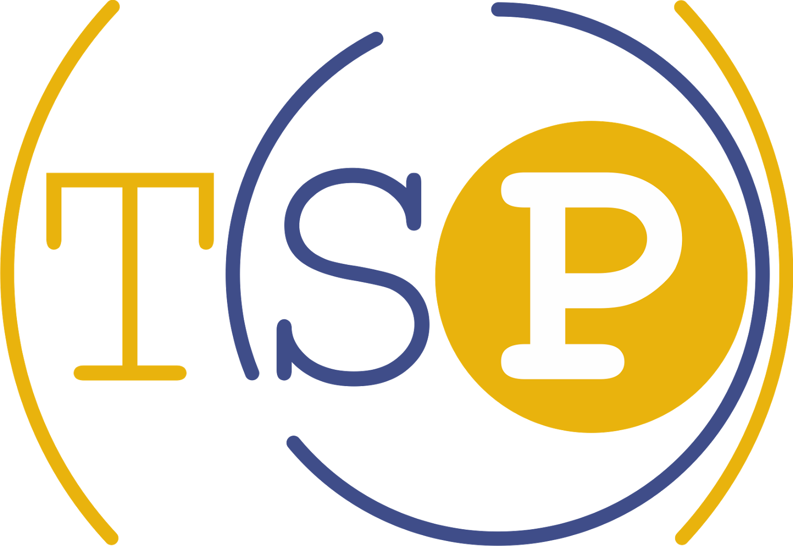
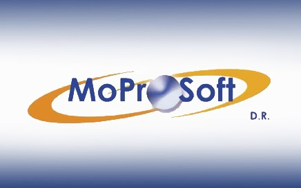

Gracias a las normas y estándares aplicados a proyectos TI y de calidad para el desarrollo de software hoy en día se nos puede
facilitar la realización de los proyectos ya que con las normas podemos seguir ciertos pasos para que los proyectos sean más
eficientes y más fáciles de realizarlos paso a paso y los estándares nos especifican que el desarrollo de un proyecto debe ser
de calidad, el cual debe satisfacer las necesidades del cliente o de la empresa a la que se le esté desarrollando dicho software.
También gracias a los importantes estándares como el proceso de software personal es de gran ayuda para los ingenieros
involucrados en el proyecto ya que les permite mejorar la forma en que trabajan y controlar los tiempos mediante formatos de
tiempo para cada una de las actividades y que el software desarrollado sea de calidad. Por otra parte, el CMMI nos ayuda a
mejorar los procesos de construcción de software y de proyectos de TI, el estándar IEEE nos brinda una serie de documentación
el desarrollo de software y proyectos de TI Y el TSP se enfoca más en la mejora de trabajo en equipo para los procesos de
software.
Introducción
Los estándares de calidad de software hacen parte de la ingeniería de software, utilización de estándares y metodologías para
el diseño, programación, prueba y análisis del software desarrollado, con el objetivo de ofrecer una mayor con habilidad,
mantenibilidad en concordancia con los requisitos exigidos. En un escenario en el que los sistemas de software se desarrollan y construyen por terceros proveedores, el contratante del servicio, como primer receptor del mismo, en muchos casos debe contar en el buen hacer del proveedor seleccionado, especialmente si nos dispone de los medios apropiados para auditar la entrega y en su caso argumentar defectos en el proceso de desarrollo.

NORMAS
Visión General
Provee una visión general de las otras cinco partes y explica la relación entre la evaluación del producto software y el modelo de calidad definido en la ISO/IEC 9126.
Planeamiento y Gestión
Contiene requisitos y guías para las funciones de soporte tales como la planificación y gestión de la evaluación del producto del software.
Proceso para desenvolvedores
Provee los requisitos y guías para la evaluación del producto software cuando la evaluación es llevada a cabo en paralelo con el desarrollo por parte del desarrollador.
Proceso para adquirentes
Provee los requisitos y guías para que la evaluación del producto software sea llevada a cabo en función a los compradores que planean adquirir o reutilizar un producto de software existente o pre-desarrollado
Proceso para avaladores
Provee los requisitos y guías para la evaluación del producto software cuando la evaluación es llevada a cabo por evaluadores independientes.
Documentación de Módulos
Provee las guías para la documentación del módulo de evaluación.
SPICE

Estándar importante iniciativa internacional para apoyar el desarrollo de una Norma Internacional para la Evaluación de Procesos de Software. El proyecto tiene tres objetivos principales: Para desarrollar un proyecto de trabajo para un estándar para la evaluación de procesos de software. Para llevar a cabo los ensayos de la industria de la norma emergente. Para promover la transferencia de tecnología de la evaluación de procesos de software en la industria a nivel mundial.
CMMI
Es un modelo de mejora de los procesos de construcción de software que provee los elementos necesarios para determinar su efectividad. Este modelo puede ser utilizado como guía para mejorar las actividades de un proyecto, área u organización, ya que proporciona un marco de referencia para evaluar la efectividad de los procesos actuales, facilitando con ello la definición de actividades, prioridades y metas para garantizar la mejora continua.
PSP

El proceso personal del software es un método de autoconocimiento, que permite estimar cuánto se tarda un individuo en realizar una aplicación de software, para así calcular el presupuesto y asegurar la operatividad de los desarrollos. PSP se concentra en las prácticas de trabajo de los ingenieros en una forma individual.
TSP

Team Software Process es un método de establecimiento y mejora del trabajo en equipo para procesos de software. Es un proceso para equipos de software, a través del cual se contribuye equipos de alto rendimiento, capaces de comprometerse con el plan y administración del desarrollo de software.
MOPROSOFT

Es una norma mexicana, basada en procesos para las industrias de software, la cual sirve para estandarizar operaciones y prácticas en gestión de ingeniería de software, para así elevar la capacidad de las organizaciones de ofrecer servicios con calidad y alcanzar niveles internacionales de competitividad.